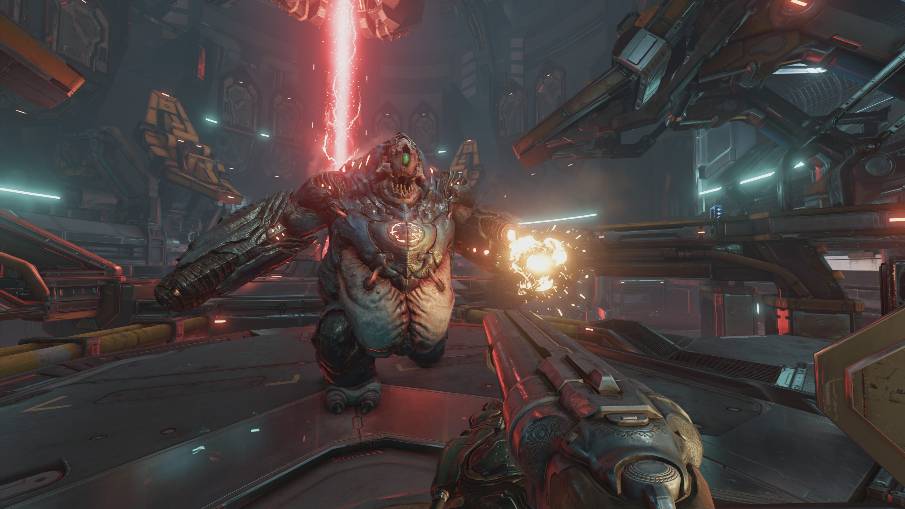
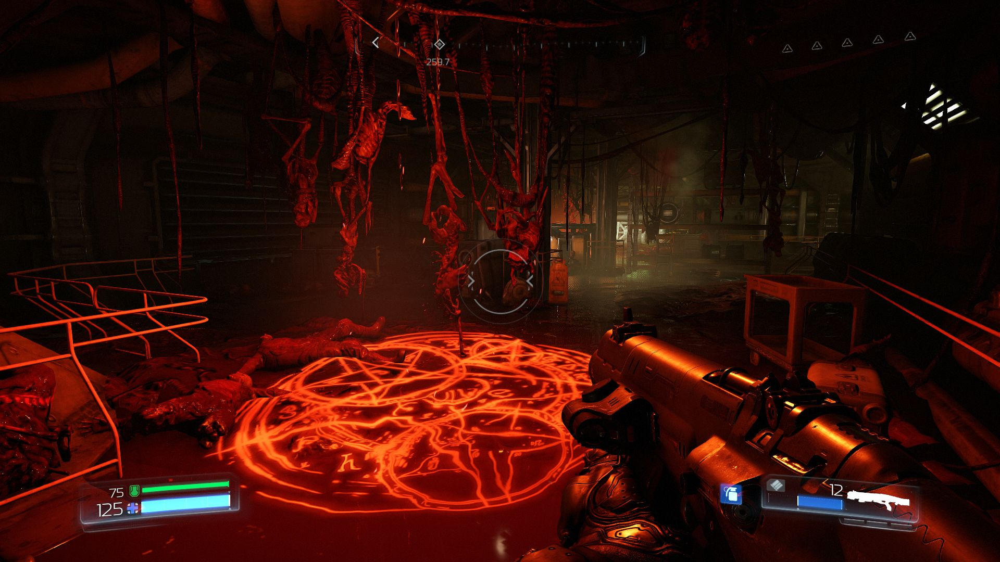

Szimpla élvezet
Szerintem mindenki hallott már valamilyen formában a Doom-ról, ugyanis ez a játéksorozat túlzás nélkül korszakalkotónak mondható, hiszen a franchise első részéhez köthető a komplett FPS(First Person Shooter) műfaj születése, ami ma már szinte alap a mai játékiparban. 1993-ban jelent meg első formában a Doom az Id Software jóvoltából. Mai szemmel már nyílván nem tűnik nagy számnak, de őszintén (még úgy is hogy bőven a születésem előtt jött ki) bármikor szívesen veszem elő és szórakoztat el még ma is, hiába vannak nála sokkal fejletteb játékok már. Ez a játék reprezentálja azt az elvet, hogy nem kell igazán sok egy élvezhető játékhoz, mert ha nagyon őszintén elemezzük, a játék csak annyiból áll, hogy ölöd a démonokat és keresed a kulcsokat és a kirájatot, esetleg a titkos szobákat.
És szerintem ez a zseniális az egészben. Egy borzasztóan egyszerű koncepció egy remek köntösben. Ez az a játék amit szimplán azért kapcsolsz be, hogy szórakozz. Van története is ami ad egy kis kontextust a dolgoknak de nélküle is szinte ugyanaz a játék lenne.
A Doom(2016) is szinte ugyanezt a formulát követi csak egy felturbózott változatban. A játék alapja nem sokat változott, mész előre és ölöd a pokol szörnyeit és közben rohadt badass-nek érzed magad. Viszont nyílván minden kapott egy extra löketet, hogy azért megfeleljen a mai követelményeknek.
Játékmenet
Lehet a Doom-ot szeretni és nem szeretni, viszont van egy dolog amit szerintem senki nem tagad, ami az, hogy még egy ilyen játék sorozat mint ez nincsen. Lehet rá azt mondani, hogy csak eszetlen lövöldözés ami nem szól semmiről de aki játszott vele azt tudja, hogy ennél sokkal többről van szó. Azok a harcok amik ebben a játékban vannak olyan intenzitásuak amiket, a folytatását leszámítva(Doom Eternal), semmilyen más játékban nem tapasztaltam. Párszor előfordult, hogy pihennem kellett egy harc után, mert felment a pulzusom és úgy lihegtem, mint egy kiadós futás után. Minden harc gyakorlatilag egy folyamatos sakk játszma, figyelned kell hova mész, mi van mögötted, hány életed van és még sorolhatnám. Rengeteg figyelmet igényel egy-egy harc amit mindennek lehetne nevezni csak eszetlen lövöldözésnek nem. Egy nagyon izgalmas, akciódús, pörgős hentelés. Tehát tulajdonképpen az elődeinek egy fejletteb változata.
Ami új volt ebben az egy fejlődési rendszer:
- Először is szinte minden fegyvernek tudsz adni két alternatív tüzelési módot, majd ezeket tudod erősíteni skill pontokkal.
- Másodszor, tudod a páncélodat fejleszteni másik fajta skill pontokkal, amik ilyen különböző interkaciókat és egyéb passzívokat erősítenek(pl. gyorsabban tölt vissza a gránát, tovább tartanak a power-upok,stb...).
- Harmadszor, különböző extra kihívások teljesítésével tudsz szerezni un. runákat amik valamilyen bónuszt képességet adnak. A játékban 12 rúna van de 3-nál többet egyszerre nem tudsz használni. Szóval a saját játékstílusodnak megfelelően kell beállítani őket.
- Végül, tudod növelni a maximum élet, pajzs, és lőszer mennyiséget ilyen piros gömbök segítségével amiket random tudsz találni a pályákon.
A játékban 10 fegyver lehet nálad(+ 3 fajta gránát), szinte minden ami az eddigi Doom játékokban előfordult és pár bónusz. A sikeresség egyik titka a jó fegyverváltásban rejlik. Nehezebb fokozaton mindig fel kell tudnod mérni hogy mikor melyik fegyvert kell használni. Nem minden fegyver jó minden ellenfél ellen, ezért egy harc során sokszor kell cserélni. A játék ad elég töltényt de nem tudod a harcokat csak egyel végigtolni, tehát muszáj váltanod egy idő után. Azt is érdemes észben tartani, hogy 6 fegyver osztozik a töltényen(3 db "pár" van), tehát arra is figyelni kell, hogy ha az egyikből elhasználod akkor a "pár"-jából is kifogy. Az osztozások a következők:
{kind=link}
{kind=link}
{kind=link}
Az ellenfelek nagy része a régi játékokból lett áthozva, de volt pár új is. Így összesen 19(+3 boss) démon található a játékban(ha jól számolom). Meghagyták a démonok közötti harcot is amit ök jó csak úgy nézni, addig se veled foglalkoznak :D. A nagy változás az AI inteligenciáján mutatkozik meg. Az egy dolog, hogy nagyon durván predict-elnek, tehát kiszámítják a mozgásod, de példuál az Imp-ek tudják, hogy mikor kell menekülniük és mikor kell támadniuk. Tehát amíg biztonságban tudnak lőni addig nem nagyon mozdulnak, de amint közeledsz feléjük elmenekülnek és próbálnak keresni egy másik helyet ahonnan baztathat és nem éred el, a Cacodémonok kikerülik a lövéseid ha tudják, a Summoner minél távolabb teleporttál tőled, stb... Valamennyire minden démonnak megvan a saját videlkedése tehát nem mindegyik bonyolítja túl harc stílusát. A legtöbb tényleg csak annyi, hogy támad eszetlenül. Akik tudnak lőni azok lőnek ahogy tudnak és csak akkor váltanak át közelharcra ha közel mész hozzájuk, szóval nem lettek eszesek, de nem is ostobák. Mondjuk enélkül az újítás nélkül nem is lenne annyira izgalmas a játék.
13 küldetés van amit kb. 10-15 óra alatt teljesíteni lehet. A legnehezebb fokozatot(Nightmare) csak azoknak javaslom, akik nagyon gyakorlottak és elviselik az unfair ellenfeleket. Aki meg annak is mestere lett, az neki mehet az Ultra-Nightmare-nek, ami tulajdonképpen ugyanaz mint a sima Nightmare futam, annyi plusszal, hogy nem halhatsz meg(jól hangzik mi? :D).
Még szerintem annyit érdemes megemlíteni, hogy nagyon szép munkát végeztek a PS4-re való optimalizálással(gondolom az Xbox One-ra is bár azt nem próbáltam). Mindenki tisztában van vele, hogy FPS játékok(legalábbis ahol precíz és gyors célzás kell) egyértelműen bilenntyűzet-egér irányításra lettek kitalálva. Ezzel nem is vitatkoznék. Viszont erős számítógép hiányában én kénytelen voltam PS4-en játszani, és abszolút pozitívan csalódtam. Szinte végig megvolt a stabil 60 fps, talán a játék végén amikor már annyian voltak mint az oroszok, előfordult egy kis fps(frame per second) drop de teljesen játszható volt akkor is. Egy kis gyakorlás után bőven meg lehet szokni a harcot, értem ez alatt a fegyverváltást, célzást, mozgást. Tehát aki csak konzolon képes elérni a játékot, őket ne tántorítsa el a kipróbálástól. Teljes mértékben élvézhető azon is. Aki pedig nem hisz benne, hogy lehet magas szinten játszani ezt a játékot kontrollerrel, annak annyit elárulnék, hogy képes voltam végigvinni a játékot Ultra-Nightmare fokozaton(egy kis fasz méregetés sosem árt), és ha nekem ment akkor bárki meg tudja csinálni.
Grafika
Sajnos nem tudok sokat mondani róla. A játék gyönyörű, a környezet nagyon hangulatos és részletes. Jól passzol a játék atmoszférájához. A démonok szépen ki vannak dolgozva, kinézetük gyakorlatilag a régi Doom-ban lévő ellenfelek modernesített változata. Tehát a grafika teljesen rendben van.
 Zene
A Doom-nak mindig is volt egy sajátos zenéje ami nagyon jól illik hozzá. Mi kéne egy jó kis démon irtáshoz ha nem a Heavy Metal? Megadják a harcok hangulatát és olyan pörgősek mint maga az akció ami miatt nagyon jó összhangban van a játék ritmusával.
Történet
Ahogy említettem a történet ebben a játéksorozatban nem játszik nagy szerepet, mert minden hangsúly a harcon van. Itt sincs teljesen másként, VISZONT hiba lenne elmenni mellette. Ugyanis annak ellenére, hogy kevés a sztori elem, mégis szerintem szükséges és teljesebbé teszi a játékot(az előzőekkel ellentétben). Szerintem nagyon jól megtalálták az egyensúlyt, mert pont annyi hangsúly van a történeten amennyi kell, tehát nincs erőltetve, de még is ad egy keretet és egy alap hangulatot ami nekem nagyon bejött.
Végszó
Összefogalva a Doom(2016) az egyik legjobb akció játék szerintem, amit mindenkinek érdemes kijátszani aki szeretne egy kicsit kiszakadni a szokásos lövöldözős formulából és meg akar tapasztalni egy új fajta FPS élményt. Sok sikert a pokolban...